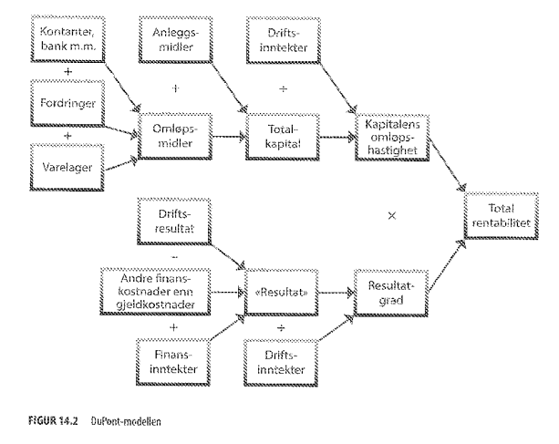
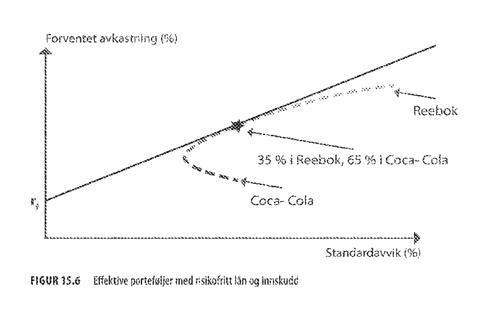
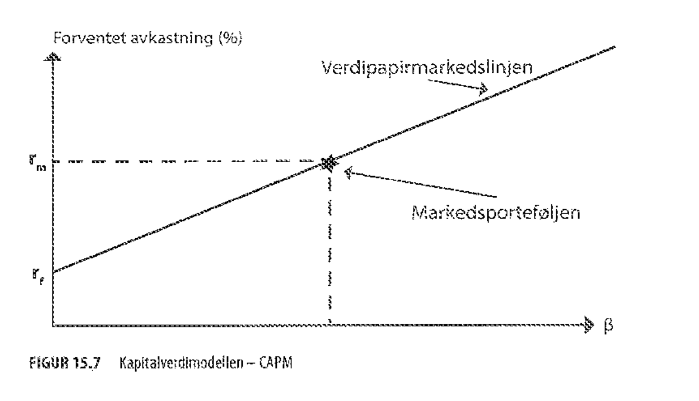
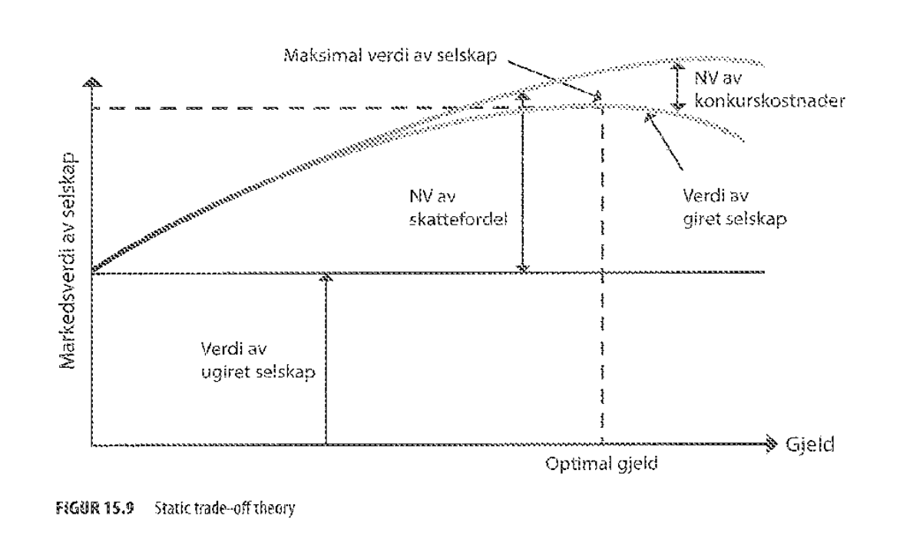

Økonomi og regnskap
13 Mikroøkonomi og markedsformer (s. 277-314)
13.1 Etterspørsel
Etterspørsel uttrykker en sammenheng mellom prisen på et produkt og den mengden som etterspørres av produktet . Indirekte etterspørsel er den inverse funksjonenen .
Totalinntekt er mengden vi selger ganget med prisen . Merk at dersom det er flere aktører kan deres mengde påvirke prisen.
Marginalinntekt er den ekstra inntekten en man får ved å produsere og selge én enhet mer. Maksimal inntekt er gitt ved
Etterspørselselastisitet eller priselastisitet er forholdet mellom den relative endringen i og den relative endringen i
- Priselastisk: betyr at øker når synker.
- Prisuelastisk: betyr at synker når synker
- Enhetselastisk: betyr at er konstant med hensyn på .
Dette gir oss også et annet uttrykk for
Gjennomsnittsinntektene , også kalt enhetsinntektene er totale inntekter delt på mengden.
13.2 Tilbud og markedslikevekt
Tilbud uttrykker en sammenheng mellom prisen på et produkt og den mengden som markedet tilbyr av produktet . Når et marked er i balanse, vil etterspørsels- og tilbudsfunksjonen møtes i ett enkelt punkt - likevektspunktet.
13.3 Kostnader
Variable kostnader er kostnader som avhenger av mengden produsert, for eksempel lønn og pris på råvarer. Faste kostnader er kostnader som er uavhengige av mengden, for eksempel vedlikehold av lokaler og maskiner. Totale kostnader er summen av faste og variable kostnader.
Marginalkostnadene uttrykker kostnaden ved å produsere én enhet mer.
Gjennomsnittskostnadene , også kalt enhetskostnadene er totale kostnader delt på mengden.
Vi kan minimere kostnadene per enhet ved å finne bunnpunktet til
Profitt er differansen mellom totale inntekter og totale kostnader
Vi maksimerer profitt ved å finne toppunktet
// TODO (?) s. 288-296
13.4 Ulike markedsformer
Vi kaller markeder med bare én produsent for monopoler, markeder med to kalles duopoler og markeder med få produsenter (to eller flere) kalles oligopoler. Et marked med veldig mange produsenter kalles et frikonkurransemarked.
Frikonkurransemarked
Kriterier
- Veldig mange produsenter
- Konsumentene har god kunnskap om kvaliteten på varene som tilbys
Konsekvenser
- Prisen er konstant med hensyn til en enkelt produsents mengde
- Elastisiteten er tilnærmet uendelig
- Maksimal profitt er gitt ved
Monopol og dødvektstap
Kriterier
- Kun én produsent, svært mange konsumenter
Konsekvenser
- Etterspørselen produsenten opplever er den samme som etterspørselen til hele markedet
- Maksimal profitt er gitt ved
Statlige monopoler og veldedige organisasjoner vil kanskje tilpasse seg til .
Konsumentoverskudd er forskjellen mellom det konsumentene faktisk betaler og det de maksimalt hadde vært villige til å betale.
Produsentoverskudd er forskjellen mellom inntekter og variable kostnader.
Samfunnsøkonomisk overskudd er summen av konsumentoverskudd og produsentoverskudd. Dette er størst når , altså under frikonkurranse.
Dødvektstapet er gitt ved maksimal samfunnsøkonomisk overskudd minus faktisk samfunnsøkonomisk overskudd.
Duopoler og oligopoler
I en Nash-likevekt er alle spillerne fornøyd med eget strategivalg gitt alle andre spilleres valg av strategi.
// TODO: Cournotmodellen s. 307-309
13.5 Mikroøkonomisk teori som modellapparat
Et viktig teoretisk resultat viser at markeder under visse betingelser vil gi løsninger som er optimale for samfunnet på den måten at ingen kan få det bedre uten at noen andre får det dårligere. Dette kalles en paretooptimal tilpasning. Kriterier:
- Antallet produsenter og konsumenter må være svært stort
- Alle produsenter og konsumenter må opptre økonomisk fornuftig
- Alle aktører i markedet må ha perfekt informasjon om kostnader og nytte i markedet
- Det må ikke eksistere transaksjonskostnader
- Det må ikke være noen eksterne effekter
14 Regnskapsanalyse og økonomistyring (s. 315-366)
14.1 Grunnleggende regnskapsbegreper
Regnskapet er bedriftens hovedredskap for å følge med på kostnader og inntekter bedriften har hatt i en periode.
Moderne bedrifter benytter dobbel bokføring. Alle poster føres opp på to ulike T-kontoer, på den ene som et debet-beløp (venstre kolonner) og på den andre som kredit-beløp (høyre kolonner). Debet er normalt et beløp man har ervervet seg eller eier, men det kan også representere en nedbetaling av gjeld eller reduksjon av egenkapitalen. Kredit representerer en reduksjon av eiendeler eller en økning av gjeld eller egenkapital. I resultatregnskapet betegner debet kostnader som har påløpt, og kredit inntekter man har hatt. Ved regnskapsslutt summeres alle T-kontoene, eventuelle restbeløp på kredit- eller på debet-siden kan føres direkte ut til resultatregnskapet og balansen.
// TODO: BEHANDLING AV MERVERDIAVGIFT (MVA.) I REGNSKAPET // TODO: BEHANDLING AV LØNN I REGNSKAPET // TODO: BEBANDLING AV LAGER I SEGNSKAPET
Kostnadsbegreper
- En kostnad er bruk av en ressurs som bedriften har brukt for å få til noe, som på et eller annet tidspunkt har ledet eller vil lede til en inntekt.
- En utgift er en pådratt betalingsforpliktelse.
- Utbetaling er når du betaler denne utgiften, altså at du innfrir en betalingsforpliktelse.
- Totalkostnader dekker alle kostnader som har påløpt i en regnskapsperiode.
- Rentekostnader er renter vi betaler for lån og kassakreditter vi har.
- Finansielle kostnader er knyttet til finansielle transaksjoner vi gjør, men omfatter ikke renter - f.eks. gebyrer.
- Ekstraordinære kostnader skyldes spesielle hendelser som ikke kan sies å være en del av den vanlige driften i regnskapsåret.
- Beslutningsrelaterte kostnader
- Alternativkostnad representerer hva vi kunne hatt av inntekter ved en alternativ plassering av pengene.
- Sunk costs/tapte kostnader er penger vi har brukt som vi ikke kan få tilbake i en beslutningssituasjon.
I tillegg har vi variable kostnader, faste kostnader, marginalkostnad og gjennomsnittskostnad som er definert tidligere.
14.2 Finansregnskapet
Finansregnskapet er lovpålagt for de fleste selskaper, og lages hovedsakelig for å gi eksterne parter en innsikt i hvordan selskapet drives og hva det har oppnådd. I finansregnskapet opererer vi med to hoveddokumenter. Resultatregnskapet viser hva selskapet har hatt av inntekter og kostnader i perioden (ofte et år). Balansen viser hvordan selskapets kapital er fordelt på ulike poster ved periodeavslutning.
Resultatregnskapet
// TODO: Skrive forklaringer
- Salgsinntekter:
- Kostnad solgte varer:
- Bruttoresultat:
- Distribusjonskostnader:
- Avskrivninger:
- Administrasjonskostnader:
- Driftsresultat:
- Inntekter på investeringer:
- Renteinntekter og -kostnader til foretak i samme konsern:
- Andre finansinntekter og -kostnader:
- Verdiendring av finansielle instrumenter vurdert til virkelig verdi:
- Ordinært resultat før skattekostnad:
- Skattekostnad:
- Ordinært resultat:
- Ekstraordinære poster:
- Skattekostnad på ekstraordinære poster:
- Årsresultat:
Balansen
Balansen er en oppstilling av eiendeler på den ene siden, og hvordan disse eiendelene er finansiert på den andre siden.
// TODO: Skrive forklaringer
- Eiendeler:
- Anleggsmidler:
- Immatrielle eiendeler:
- Varige driftsmidler:
- Finansielle anleggsmidler:
- Omløpsmidler:
- Varelager
- Fordringer
- Kortsiktige investeringer
- Kontanter
- Kredit:
- Gjeld
- Avsetning for forpliktelser
- Annen langsiktig gjeld
- Kortsiktig gjeld
- Egenkapital
- Innskutt egenkapital
- Opptjent egenkapital
14.3 Grunnleggende regnskapsanalyse av finansregnskapet
Å se på totalrentabiliteten er den vanligste lønnsomhetsanalysemetoden. Den forteller hvor mange prosent inntjening bedriften har på den totale kapitalen benyttet i regnskapsåret. For andre bedrifters regnskap bruker vi følgende formel
For eget regnskap er det bedre å bruke DuPont-modellen, som er mer komplisert, men gir også betydelig mer informasjon.

Egenkapitalrentabilitet viser investorer hvor god avkastning de får på sine investerte penger og er gitt ved
* == Driftsresultat (?) // TODO
Soliditet er knyttet til egenkapitalandelen.
Rentedekningsgrad er gitt ved
Likviditetsgrad
Likviditet handler i stor grad om forholdet mellom anleggsmidler (langvarige fysiske eiendeler) og omløpsmidler (eiendeler som lett kan gjøres om til kontanter).
*
Arbeidskapital er differansen mellom omløpsmidler og kortsiktig gjeld. Hvis denne er negativ har vi finansiert noe av anleggsmidlene med kortsiktig gjeld, som kan tyde på dårlig likviditet.
14.4 Internregnskapet
Internregnskapet er ikke lovpålagt, men de fleste større selskaper har ulike typer av internregnskap som et middel for ledelsen til å styre økonomi og produksjon i selskapet.
Kalkyler brukes ofte som navn på en forhåndsberegning av hva fortjenesten er på et bestemt produkt eller en produktgruppe.
Det fins to hovedretninger innen kalkyler: selvkostmetoden og bidragsmetoden. Selvkostmetoden bruker tilleggssatser for å kalkulere både faste og variable kostnader, mens vi etter bidragsmetoden kun kalkulere inn variable kostnader.
// TODO: selvkostmetoden, bidragsmetoden
Dekningsbidrag og dekningsgrad
Nullpunktsanalyser
14.5 Budsjettering
Kostnadsbudsjettet informerer ledelsen om hvor mye penger som er brukt så langt i et prosjekt eller en tidsperiode.
Resultatbudsjettet brukes for å simulere en periode, og bruker de samme postene som i resultatregnskapet. Det ser på både inntekter og kostnader.
Likviditetsbudsjettet er også en slags gjetning om hvordan man vil ligge an fremover i tid, men er kun opptatt av bedriftens likviditet. Det ser på inn- og utbetalinger, samt kundefordringer.
15 Investeringsanalyse (s. 367-422)
15.1 Investeringer
En investering kan defineres som å bruke ressurser i dag for å skaffe seg bedre ressursgrunnlag i fremtiden.
15.2 Nåverdiberegninger
Alternativkostnaden til kapital bestemmes av hva som er den beste alternative avkastning med samme risiko. Vi kaller dette en målestokk fordi vi sammenligner investeringen vår med denne alternative plasseringen.
Avkastningskrav, forventet avkastning, eller diskonteringsrenten er betegnet .
Nåverdien av fremtidige kontantstrømmer er gitt som følger. betegner det pengebeløpet som mottas i periode . er gjerne negativ siden vi investerer et beløp.
Nettonåverdien er gitt ved
// TODO: Geometrisk rekke
For geometrisk endring av kontantstrøm over uendelig tidsperioder har vi
Internrenten er den diskonteringsrenten som gir .
15.3 Risikoanalyse
Følsomhetsanalyse går ut på å variere én parameter av gangen og se på effekt på .
Scenarioanalyse går ut på å variere flere parametre samtidig og se på effekt på .
Med en Monte Carlo-simulering kan vi beregne forventet basert på sannsynlighetsfordelinger til parametre.
Beslutningstrær fremstiller prosjektet som en rekke beslutninger og utfall, modellert som et tre med vektede kanter.
15.4 Risiko og avkastning
Diversifisering innebærer at porteføljerisiko blir lavere enn det veide gjennomsnittet av risikoene, så lenge det ikke er perfekt positiv korrelasjon. Samtidig er forventet avkastning alltid lik det veide gjennomsnittet av forventede avkastninger.
Beta
15.5 Capital Asset Pricing Model - CAPM (Kapitalverdimodellen - KVM)
CAPM er den mest brukte formelle metoden for prising av risiko i investeringsprosjekter.
For en aksjeportefølje av to aksjer er forventet avkastning og standardavvik gitt ved følgende
For kombinasjon med en risikofri investering er standardavviket gitt ved følgende, der er andelen av formuen som plasseres i aksjeporteføljen

Linjen som går fra risikofri rente og tangerer kurven representerer effektive porteføljer og kalles kapitalmarkedslinjen.
Videre ser vi på vilkårlig mange aksjer. Da får vi en verdipapirmarkedslinje som også fanger opp risikopremien til enkelte verdipapirer. // TODO: (Hvordan?)

Investeringer som omsettes i velfungerende markeder må ligge på verdipapirmarkedslinjen der risikopremier bestemmes av beta.
Bruk av CAPM
- Beta kan finnes ved linær regresjon mellom avkastninger på en investering og avkastninger på en bred markedsindeks
- Risikofri avkastning kan vi finne som avkastning på statsobligasjoner av passende lengde
- Forventet markedsavkastning finner vi som risikofri avkastning pluss historisk forventet markedspremie
15.6 Selskapets kapitalkostnad - WACC
Vi har følgende hovedmuligheter til finansiering:
- Ny egenkapital
- Tilbakeholdt overskudd
- Lån
- Hybridmodell
Vi finner kan finne kapitalkostnad ved formelen
- , verdien av egenkapital, finnes fra markedsverdier av aksjer ganger antall utestående aksjer. Evt totalkapital - gjeld.
- , forventet avkastning av egenkapital, kan finnes via CAPM med regresjonsbeta.
- , børsnotert obligasjonsgjeld
- avkastning på gjeld
Dersom analysen bygger på CAPM kan vi uttrykke beta for aktiva som følger:
Weighted average cost of capital - WACC - er kapitalkostnaden til totalkapitalen etter skatt (skattefordel). Denne kan brukes som diskonteringsrente for prosjekter.
15.7 "Giring" - bruk av lån til å øke egenkapitalrenabiliteten
M&M 1: Selskapet kan ikke endre sin totale verdi ved å splitte kontantstrømmene. Verdien er bestemt av selskapets realinvesteringer, ikke av hvilke verdipapirer det utsteder.
M&M 2: Forventet avkastning på egenkapitalen til et selskap øker med gjeld-egenkapital-forholdet, uttrykt i markedsverdier, og hastigheten i økningen er bestemt av spredningen mellom og .
Static trade-off sier at verdien av selskapet vil variere med giringen og den kan uttrykkes som følger

Giring kan også bli påvirket av andre vurderinger enn de rent økonomiske
- Kontroll: Å øke egenkapitalen ved å utstede aksjer reduserer eiernes kontroll, gjeld holder kontrollen
- Fleksibilitet: Lånekapital og tilbakeholdt overskudd er raskere enn ny egenkapital
- Eksisterende gjeldsgrad: har betydning for mulighet og rente for fremtidige lån
15.8 Kvalitative metoder for evaluering av Investeringer
Med kvalitet mener vi i denne sammenhengen ikke hvor bra investeringen blir, men hvor godt den samsvarer med bedriftens strategiske plan, og hvor godt den faktisk utnytter bedriftens tilgjengelige ressurser.
15.9 Forventning, standardavvik, varians, kovarians
Læringsmål
13
- Forstå hvordan man kan beskrive et marked gjennom bruk av etterspørsels- og tilbudsfunksjoner
- Kjenne til betingelsene for et frikonkurransemarked
- Forstå hvordan prisen fastsettes i et frikonkurransemarked
- Forstå hvordan og hvorfor bedrifter i monopol og oligopolmarkeder kan påvirke prisen
- Forstå hva en produksjonsfunksjon er og hvordan produksjonskostnader tas inn i beregningene
- Kunne beregne hvilken profitt bedriften kan få i frikonkurranse, monopol- og oligopolmarkeder når kostnadsfunksjonen og etterspørselsfunksjonen er gitt
- Kjenne til litt av kritikken mot mikroøkonomisk teori
14
- Å forstå de viktigste begrepene og teknikkene for å sette opp et regnskap, og hvilke utfordringer og begrensninger som ligger i disse teknikkene
- Å kunne gjennomføre en analyse av et regnskap for å forstå den økonomiske situasjonen til bedriften regnskapet gjelder for
- Å kunne sette opp og beregne ulike kalkyletyper, og vite når og hvorfor vi bruker ulike kalkyler
- Å kunne sette opp og bruke budsjetter som en del av bedriftens strategiske og taktiske planlegging for fremtidig drift
15
- Å forstå ulike beslutninger som må gjøres når det gjelder investeringer
- Å lære deg å bruke kvantitative metoder for investeringsanalyse med vekt på nåverdimetoden, internrenteberegninger og risikoanalyse
- Å forstå og analysere selskapets ulike muligheter for å finansiere investeringen og gjennom dette forstå selskapets kapitalkostnader
- Å forstå begrepet porteføljeforvaltning og hvordan investeringen inngår sammen med andre investeringer
- Å lære deg å bruke kvalitative metoder for investeringsanalyse med vekt på strategisamsvar og ressursutnyttelse i en portefølje
Begreper fra forelesning
Forelesning 1
- Mengde (Q)
- Pris (P)
- Inntekt
- Totalinntekt (TR)
- Marginalinntekt (MR)
- Kostnad
- Ressursbruk (Material, Manpower, Machines, Misc., Money)
- Variable kostnader (VC)
- Underproporsjonale variable kostnader (konkav)
- Proposjonale variable kostnader (lineær)
- Overproposjonale variable kostnader (konveks)
- Faste kostnader (FC)
- Driftsavhengige faste kostnader
- Sprangvis faste kostnader
- Totale kostnader (TC)
- Marginalkostnad (MC)
- Profitt = Inntekt - Kostnad
- Etterspørsel
- Indirekte etterspørsel
- Konsumentoverskudd (KO)
- Produsentoverskudd (PO)
- Samfunnsøkonomisk overskudd (SO)
- Monopol
- Duopol
- Oligopol
- Frikonkurranse
- Cournotmodellen
- Bertrandmodellen
- Nash-likevekt
Forelesning 2
- Regnskap
- Dobbelt italiensk regnskap
- Balanseidentitet: eiendeler = egenkapital + gjeld
- Kontoplan
- Balanse (hvordan penger brukes, hvordan penger er skaffet)
- Resultatregnskap
- Regnskapsanalyse
- Totalkapital
- Egenkapital
- Finansinntekter
- Finanskostnader
- Omløpsmidler
- Lønnsomhetsanalyse
- Rentabilitet
- DuPont modellen
- Anleggsmidler
- Driftsinntekter
- Omløpshastighet
- Resultatgrad
- Total rentabilitet
- DuPont modellen
- Resultat før ekstraordinære poster
- Gjennomsnittlig egenkapital
- Driftresultat
- Rentabilitet
- Giring: forhold mellom gjeld og egenkapital
- Gjeld
- Gjeldsgrad = Gjeld / Egenkapital
- Egenkapitalandel
- Rentedekningsgrad
- Driftresultat
- Likviditet
- Likviditetsgrad 1
- Likviditetsgrad 2
- Kortsiktig gjeld
- Ubenyttet kassakreditt
- Mest LOM
- Kapitalbehov
- Omløpsmidler
- Råvarelager
- PIA
- Ferdigvarelager
- Kundefordringer
- Produktkalkyle
- Direkte kostnader
- Indirekte kostnader
- Direkte material (dM)
- Direkte lønn (dL)
- Maskintimer (Mh)
- Tilvirkningskostnad
- Selvkostkalkyle
- Bidragskalkyle
- Activity based cost
- Salgspris
- Dekningsgrad
- Dekningsbidrag
- Selvkostnad
- Fortjeneste
- Nullpunktsanalyse
- Nullpunkt i stykk / kr
- Sikkerhetsmargin i stykk / kr / %
Forelesning 3
- Investeringsanalyse
- Nåverdi
- Kapitalkostnad
- Kapitalrente (r) = Risikofri rente + Risikotillegg
- Nominell rente
- Realrente
- Capital Asset Pricing Model (CAPM)
- Kapitalkostnadssynonymer (Kalkulasjonsrente, Diskonteringsrente, Forventet avkastning, Avkastningskrav)
- Fisher-effekten
- Kompensasjonskonsumpsjon
- Inflasjon
- Metoder for å evaluere kontantstrømmer
- Økonomibaserte teknikker
- Nettonåverdi
- Nåverdiskvoten
- Internrente
- Annuitet
- Regnskapsbaserte teknikker
- Tilbakebetalingstid
- Book-rate of return – Accounting rate of return
- Økonomibaserte teknikker
- Erstatningsinvestering
- Annuitet
Forelesning 4
- Kapitalkostnad/rente
- Mål på risiko
- Varians på avkastning
- Standardavvik på avkastning
- Forventningsverdi
- Porteføljeteori
- Samvariasjon – kovarians
- Korrelasjonskoeffisienten
- Capital Asset Pricing Model (CAPM)
- Diversifisering
- Markedsrisiko, Porteføljerisiko og diversifiserbar risiko
- Beta
- Regresjonsbeta
- Selskapets kapitalkostnad
- Fare ved bruk av fast avkastningskrav
- Aktiva og Passiva, Bruk og Finansiering
- Avkastning på aktiva
- Markedsverdi
- Beta for egenkapital
- Kapitalstruktur og verdi
- WACC – Weighted Average Cost of Capital
- Effektiv lånerente
- Skattefordelen av gjeldsrenter
- WACC som diskonteringsrente
- Konkurskostnader
- Verdi av selskap
- Static trade-off
- Unik Risiko
- prognostisert kontantstrøm (og passivitet)
- kvantitative og kvalitative data
- Prognose
- Scenarioanalyse
- Sensitivitetsanalyse
- Risikomål
- Value-at-Risk (VaR)
- Monte Carlo-simulering
- Beslutningstrær og opsjoner